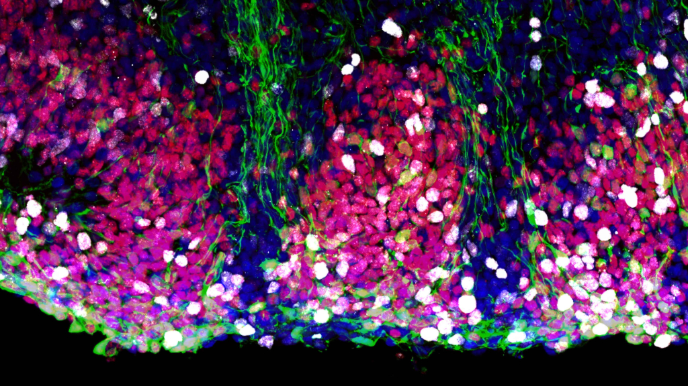

From development to adult neurogenesis
Neural stem cells generate the neurons and glia that build the nervous system. A central question in our research is how these cells change through development while retaining, in selected brain regions, the ability to produce new neurons later in life.
Our work has helped define a developmental continuum linking embryonic neural stem cells with the stem-cell populations that support adult hippocampal neurogenesis. We are particularly interested in the dentate gyrus, where neural stem cells undergo major changes in position, morphology and proliferative state as the hippocampus develops.
We combine human developmental tissue with experimental 3D models to investigate how stem-cell states are specified and maintained, and how environmental signals alter their behaviour.
- Developmental origins and lineage progression of neural stem cells
- Formation of the human dentate gyrus and hippocampal neurogenic niche
- Transitions between proliferative and quiescent stem-cell states
- Effects of stress, inflammation and pharmacological signals on neurogenesis

We use imaging, lineage analysis and transcriptomic approaches to connect stem-cell identity with tissue organisation.
Human models
Hippocampal development in 3D
Human stem cell-derived hippocampal organoids allow us to follow neural stem cells over extended periods and test how their state changes under experimentally controlled conditions. These models complement observations from developing human tissue and provide a system for studying neurogenesis in health and disease.
We are interested not only in how many neurons are produced, but also in the developmental timing of stem-cell activation, differentiation and maturation. This allows us to ask how early perturbations may have lasting effects on hippocampal organisation and function.
D. A. Berg et al. A Common Embryonic Origin of Stem Cells Drives Developmental and Adult Neurogenesis. Cell, 2019. View publication
Related research